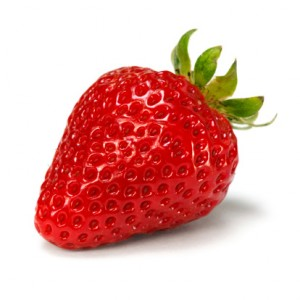

Eat Healthy.Login
Eat Healthy.Login
Latest Articles
Why Strawberry?
Many foods commonly consumed in the U.S. are valuable sources of antioxidants. But researchers have recently ranked the 50 best antioxidant sources among commonly eaten foods and found strawberries to be quite exceptional. When total antioxidant capacity was measured against a uniform amount of food (100 grams, or about 3.5 ounces), strawberries ranked 27th best among U.S. foods. In addition, when only fruits were considered, strawberries came out 4th among all fruits (behind blackberries, cranberries, and raspberries). However, since many foods (for example, spices and seasonings) are seldom consumed in amounts as large as 3.5 ounces, researchers also looked at common serving sizes for all foods and their total antioxidant capacity. In this evaluation based on common serving sizes, strawberries came out 3rd among all U.S. foods including spices, seasonings, fruits, and vegetables! When we hear the word "strawberry," we might think about a very commonplace fruit. But the antioxidant capacity of strawberry is anything but common!